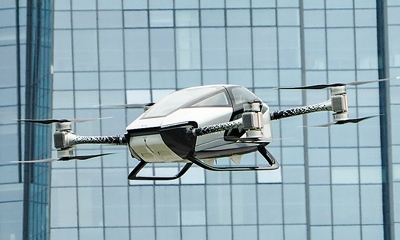

承接作业一选型对象，按系统安全工程思路，从危险源识别、故障模式分析、风险评估、冗余防护到适航与运行安全，进行全维度深度分析。
本报告以系统安全工程方法为主线，将整机安全拆解为「识别 — 分析 — 评估 — 防护 — 监管」五个递进环节，避免只关注单一机载设备，而忽略人因、环境与运行管理层面的风险。
梳理各子系统潜在危险来源
分析失效模式与后果（FMEA）
按严重度与可能性分级管控
设计冗余与应急处置策略
认证、监管与持续安全改进
| 子系统 | 主要危险源 / 失效来源 | 可能后果 |
|---|---|---|
| 动力与电池系统 | 电芯短路、电池热失控、单包失效、供电线路断路；低温环境电池功率骤降；过充过放。 | 动力丧失、起火、迫降 |
| 飞控与感知系统 | 飞控计算机死机、传感器失效；雷达 / 视觉被强光、浓雾、雨雪干扰；通信链路中断。 | 姿态失控、避障失效、误判 |
| 旋翼与机械结构 | 电机故障、螺旋桨损伤或断裂、机臂连接疲劳、振动导致紧固件松脱。 | 推力失衡、结构解体 |
| 运行环境与人因 | 低空乱流、鸟类撞击、起降场地异物；飞行员误操作；与其他航空器空域冲突。 | 碰撞、迫降、次生事故 |
| 故障模式 | 触发原因 | 影响后果 | 现有 / 建议防护 |
|---|---|---|---|
| 单电机 / 螺旋桨失效 | 电机过载、器件老化、桨叶损伤 | 单侧推力下降，姿态需重新配平 | 多旋翼分布式布局，剩余动力维持可控降落；故障隔离与快速姿态修正 |
| 电池热失控 | 内部短路、挤压碰撞、高温老化 | 起火、断电，威胁乘员安全 | 电池包隔热与泄压设计、热蔓延抑制；监测电芯温度与电压异常 |
| 飞控单元异常 | 软硬件故障、电磁干扰 | 姿态控制不稳或失去控制 | 异构飞控冗余与故障自动切换；进入安全悬停 / 迫降逻辑 |
| 感知避障失效 | 气象遮挡、传感器脏污、算法误判 | 无法及时发现障碍物 | 多模态感知融合；限定飞行气象条件；人工接管与监控兜底 |
| 结构连接松脱 | 长期振动、疲劳裂纹、装配缺陷 | 机臂 / 部件脱落风险 | 定期检修与疲劳检测；结构件寿命管理；关键部位冗余连接 |
| 通信链路中断 | 信号遮挡、干扰、设备故障 | 地面监控 / 遥控指令中断 | 机上自主飞行兜底；失联后自动返航或指定区域迫降 |
综合事故严重度与发生可能性，将主要风险划分为高、中、低三级，分级匹配管控资源。
| 风险项 | 等级 | 评估说明 |
|---|---|---|
| 电池热失控 / 起火 | 高风险 | 后果严重，须作为首要安全项目进行设计与监测管控。 |
| 多电机连锁失效 | 高风险 | 可能导致整体动力丧失，依赖冗余设计与应急降落能力。 |
| 强对流 / 恶劣天气飞行 | 高风险 | 超出平台包线，应以气象门槛和禁飞规则严格限制。 |
| 起降场地失效 / 异物 | 中风险 | 可通过场地勘察、净空检查与起降规范降低概率。 |
| 单传感器失效 | 中风险 | 冗余感知可补偿，需防止多传感器同源失效。 |
| 轻微气流颠簸 / 小异物碰撞 | 低风险 | 在设计包线内可承受，常规监控即可。 |
■ 高风险集中在动力 / 电池与极端工况，是安全设计与运行管控的重点。
分布式多电机多桨布局，避免单一动力点成为致命单点；单组失效后由其余动力维持可控飞行与降落。
飞控采用多通道 / 异构备份，主系统异常时自动切换；关键指令具备独立通路，降低共因失效概率。
电池包隔热、泄压与热抑制设计，阻断热失控蔓延；实时监测电压、温度与绝缘状态，异常提前预警。
故障触发自动悬停、一键返航与指定区域迫降逻辑；预留整机降落伞等最后一道兜底防护的设计空间。
eVTOL 属于航空类产品，安全不仅取决于机载硬件，还依赖认证体系、空域管理与运维规范共同保障：
| 方向 | 具体建议 |
|---|---|
| 被动安全兜底 | 配备整机降落伞，覆盖动力全失等极端工况，作为最后一道防护。 |
| 感知可靠性 | 升级多模态融合感知，提升雨、雾、夜间等低能见度环境下的识别能力。 |
| 在线健康诊断 | 建立远程实时监控平台，对电池、电机、结构状态进行在线诊断与预警。 |
| 人因与培训 | 规范飞行员 / 操作员资质培训，明确应急处置流程与人机接管职责。 |
| 标准与数据 | 积累试飞与运行安全数据，完善风险评估与失效案例库，支撑设计迭代。 |
旅航者 X2 通过分布式动力、飞控备份、电池防护与应急降落等冗余设计，规避了多数单点致命故障，平台在限定试飞与试点场景下具备基本安全性。但 eVTOL 的安全是一项系统工程：除机载硬件防护外，空域管理、气象门槛、运维检修、人员资质与适航认证共同决定整机安全水平。
未来随着感知可靠性、电池安全与应急兜底手段的提升，配合法规标准与运行体系的完善，载人 eVTOL 才能在可控风险下逐步走向规模化商业运营。